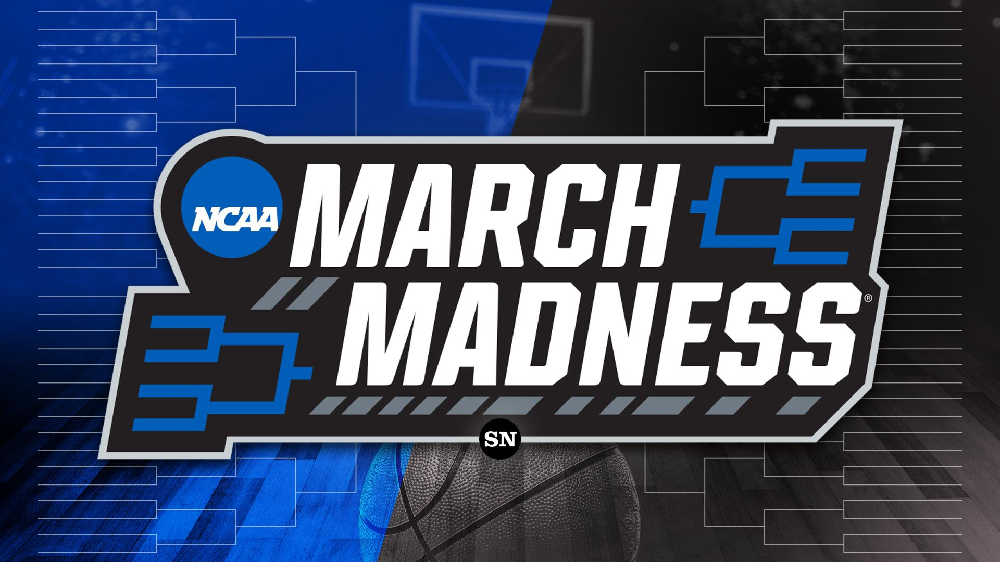

This personal project showcases my utilization of Python and a range of libraries including pandas, numpy, scikit-learn, keras, and matplotlib to analyze and predict the performance of the NASDAQ 100 Technology Sector. With a dataset sourced from Yahoo Finance covering historical stock market data from 2006 to 2023, I employed regression analysis techniques such as linear regression and decision tree regression models. Additionally, I incorporated time series analysis using an LSTM neural network model. These models were trained, evaluated, and visualized to extract meaningful insights into stock market performance and enable accurate predictions. Notably, I created a PowerBI dashboard that specifically highlights the performance of the LSTM model. The dashboard features a line chart illustrating the predicted and actual close prices, along with essential metrics like R-squared and mean squared error. Through this comprehensive analysis and the interactive PowerBI dashboard, I was able to delve into the dynamics of the NASDAQ 100 Technology Sector and make informed predictions.

This portfolio showcases my proficiency in SQL through two projects. The first project demonstrates my ability to clean and transform data using various techniques, such as standardizing date formats, populating missing address data, and splitting address and owner information into individual columns. The second project explores data through queries, visualizations, and statistical analysis. By applying these skills, I can extract insights from data and present them in a meaningful way. Together, these projects demonstrate my ability to work with data in SQL and to provide valuable insights to businesses and organizations.

In this project, I created five Tableau visualizations from Airbnb data. Specifically, I created a bar chart showing the average price per bedroom, a line chart displaying the revenue for the year, a color-coded map showing the zip code and the average price, another bar chart showing the average price by zip code, and lastly, a table displaying the distinct count of listings by bedrooms.

I analyzed survey data from data professionals and created a Power BI dashboard to showcase insights into job titles, incomes, country distribution, programming languages, and perceptions of difficulty in breaking into the data profession. The dashboard includes a treemap, stacked bar chart, gauges, stacked column chart, and donut chart to provide a comprehensive overview of the data.
In this project I created an algorithmic trading bot in Python that buys and sells the S&P 500 ETF based on technical indicators such as moving averages and RSI. It also implements a trailing stop loss strategy to minimize losses. The bot had a return of 163.36% over the backtesting period from 2000 to 2022.

Contains Java projects that I have completed. The projects include an arcade game, an automobile cost calculator, a counter class, a diving score calculator, a crptarithmetic puzzle solver, a class for working with fractions, a hot dog stand tracker, a restaurant menu program, a class for working with monetary amounts, an odometer class, and a palindrom checker. I have also included some test programs for some of the classes.
Contains various Python projects such as calculating basketball player statistics, guessing games, analyzing housing prices, and playing Rock-Paper-Scissors. There is also a Hangman game that uses a user-defined module to select a random word for the game. Another project involves creating a MadLib-style string using user inputs.
In my Excel project, I utilized various data cleaning techniques, such as filters, find and replace function, and duplicate checks, to ensure data accuracy and consistency. I also created new columns for future data analysis. To analyze the data, I created three pivot tables that provide valuable insights and summarized information. For each pivot table, I created a corresponding chart that visually represents the data in an easily understandable manner.

This project involves ranking NCAA basketball teams by analyzing various statistical factors. By using data from a CSV file, I assign weights to different factors such as win percentage, field goal percentage, three-point percentage, free throw percentage, rebounds per game, and assists per game. Using these weights, I calculate a weighted score for each team and print out the team name and its corresponding score. The goal of this project is to create a ranking system that can predict the performance of different teams in the March Madness tournament. Through this project, I am developing my skills in data analysis, programming, and statistical modeling, while also deepening my knowledge of NCAA basketball.